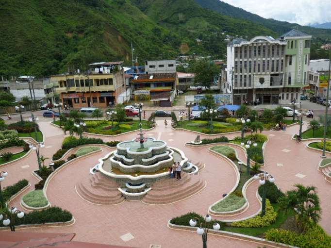

Provincia de Zamora Chinchipe. Es la provincia de las cascadas y las aves, la riqueza turística, esta en la vegetación de la selva amazónica que ofrecen una vista panorámica de la urbe y el callejón del río Bombuscaro. Es una provincia de Ecuador ubicada en el suroriente de la Amazonía ecuatoriana. El Parque Nacional Podocarpus es otro sitio obligado de visita para el turista.
La provincia de Zamora Chinchipe está ubicada en la zona sur de la
Región Amazónica Ecuatoriana, la capital de la provincia es Zamora. Su
territorio es muy irregular debido a que en esta zona se estrechan las
cordilleras Occidental y la Oriental y se confunden con la cordillera
del Cóndor. Los ríos más importantes son el río Zamora, que nace en la
provincia de Loja y constituye una excelente vía de comunicación entre
los pueblos de la región, el Nangaritza, Jíbaro Numbala, entre otros. La
provincia de Zamora Chinchipe, para su administración, se divide en ocho
cantones, la Centinela del Cóndor, Chinchipe, Nangaritza, Palanda, El
Pangui, Yacuambi, Yanzatza, Zamora.
Cuenta con nueve parroquias urbanas y veintidós rurales. La provincia de
Zamora Chinchipe conformaba una sola Provincia con Morona Santiago bajo
el nombre de Santiago Zamora. En el año de 1953 por decreto se dividió
en dos provincias. La población de Zamora Chinchipe, está constituida
por grupos de indígenas, como los shuaras, que han conservado su cultura
a través de los tiempos, al igual que los otros pueblos orientales. Su
variedad en la flora y fauna de bellas y raras especies se complementa
con escenarios llenos de chorreras, cascadas, cauces caudalosos y
senderos hechos por la mano del hombre.